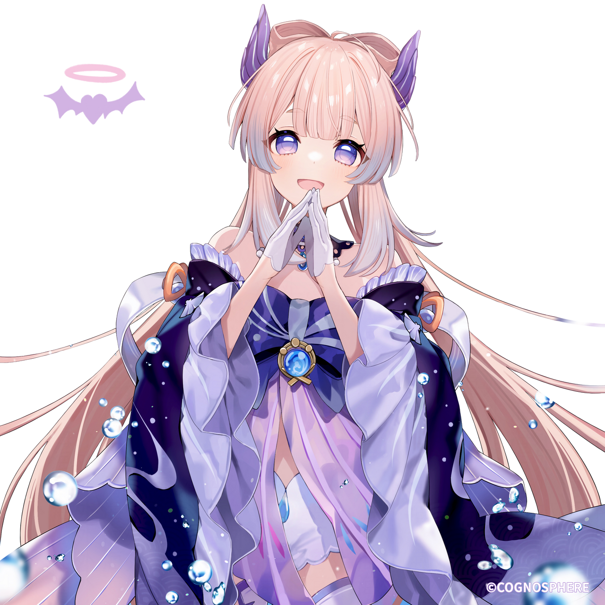
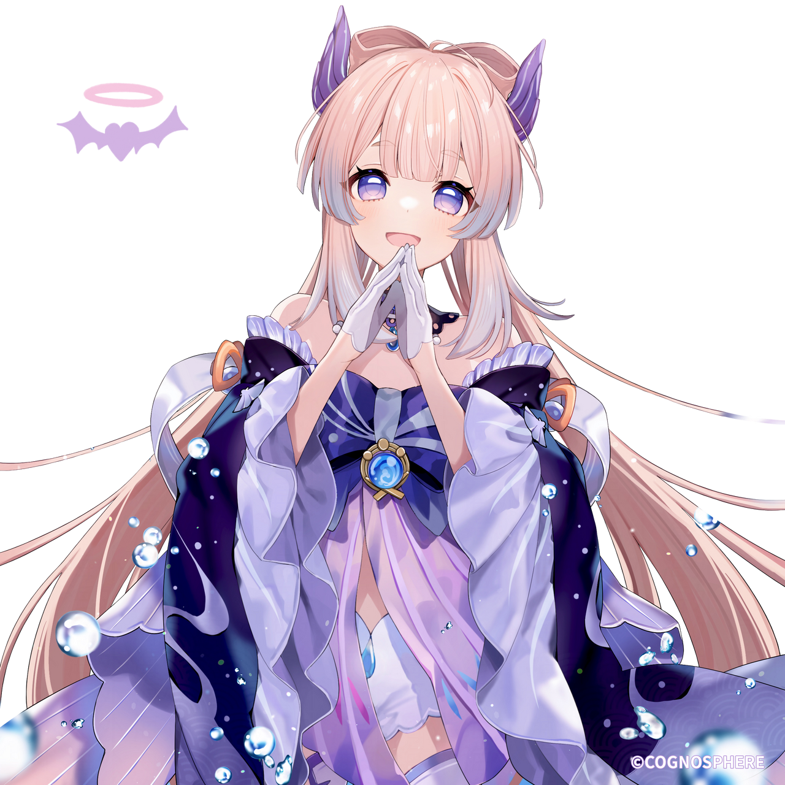

Sangonomiya
Kokomi
The Divine Priestess of Watatsumi Island. All of the island's affairs are at this young lady's fingertips.

The Divine Priestess of Watatsumi Island. All of the island's affairs are at this young lady's fingertips.
Kokomi is the Divine Priestess of Watatsumi Island, and also serves as its supreme leader.
She is well-versed in the art of war, is good at strategizing, and has keen insights into military affairs. She is also adept at handling domestic affairs, diplomacy, and other matters.
Still, this unfathomable leader has a mysterious side to her...
Food Type : Recovery Dish
Utility : Restores 16% of Max HP and an additional 1,350 HP to the selected character.
Source : Obtained by cooking
Region : Inazuma
Click on any card to show its info
 

TCG Character Card Sangonomiya Kokomi


Talent Card Tamakushi Casket

Performs up to 3 consecutive attacks that take the form of swimming fish, dealing Hydro DMG.
Consumes a certain amount of Stamina to deal AoE Hydro DMG after a short casting time.
Gathering the might of Hydro, Kokomi plunges towards the ground from mid-air, damaging all opponents in her path. Deals AoE Hydro DMG upon impact with the ground.
While donning the Ceremonial Garment created by Nereid's Ascension, the final Normal Attack in Sangonomiya Kokomi's combo will unleash a swimming fish to deal 30% of her Max HP as Hydro DMG.
This DMG is not considered Normal Attack DMG.
Sangonomiya Kokomi gains the following Healing Bonuses with regard to characters with 50% or less HP via the following methods:
Increases the Level of Nereid's Ascension by 3.
Maximum upgrade level is 15.
While donning the Ceremonial Garment created by Nereid's Ascension, Sangonomiya Kokomi's Normal Attack SPD is increased by 10%, and Normal Attacks that hit opponents will restore 0.8 Energy for her.
This effect can occur once every 0.2s.
Increases the Level of Kurage's Oath by 3.
Maximum upgrade level is 15.
While donning the Ceremonial Garment created by Nereid's Ascension, Sangonomiya Kokomi gains a 40% Hydro DMG Bonus for 4s when her Normal and Charged Attacks heal, or would heal, any party member with 80% or more HP.
<
>